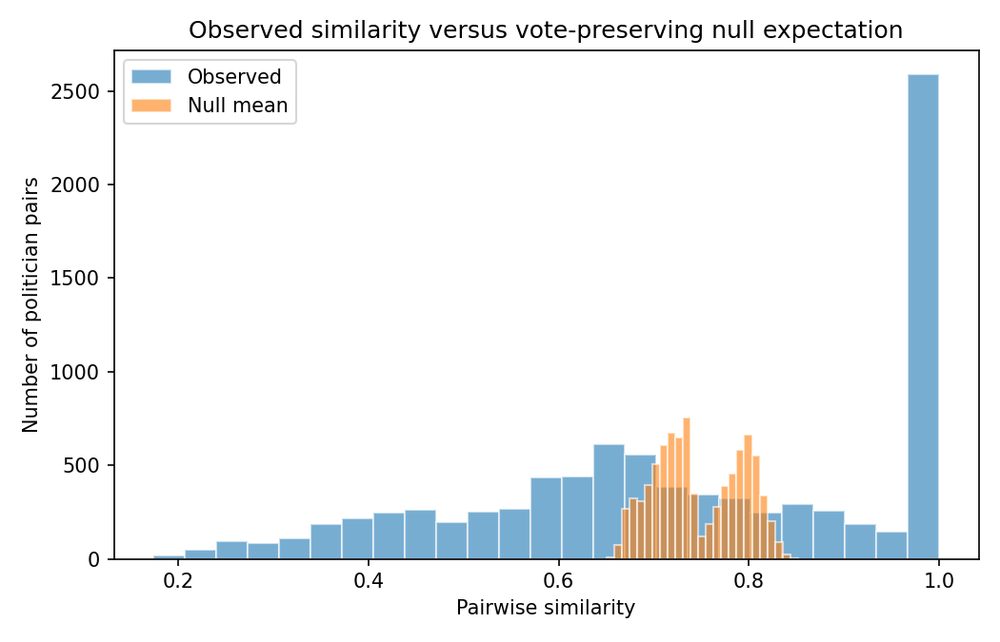
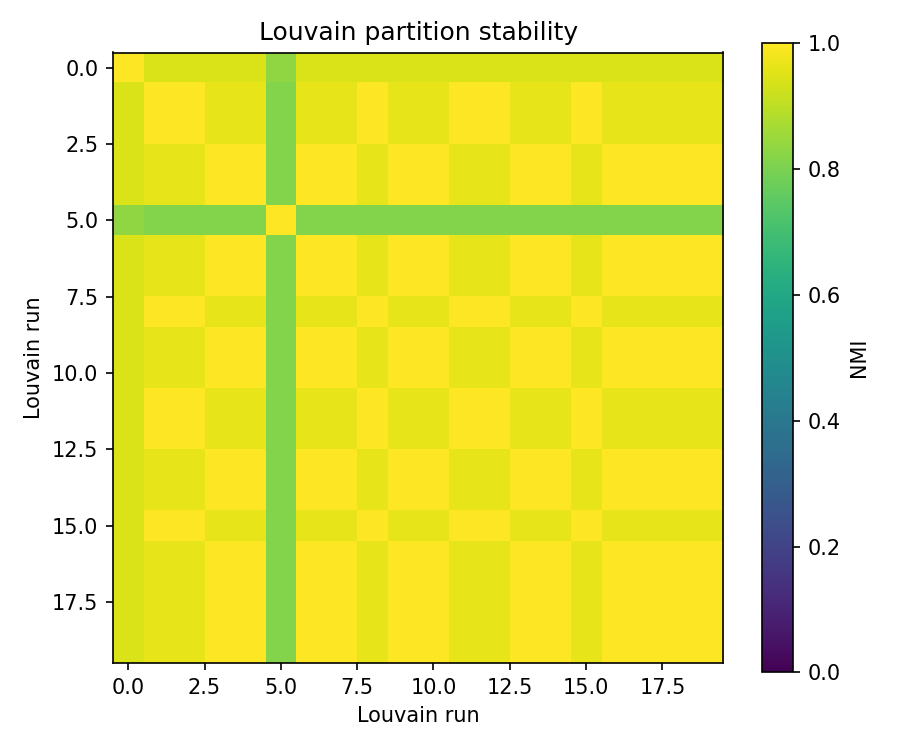
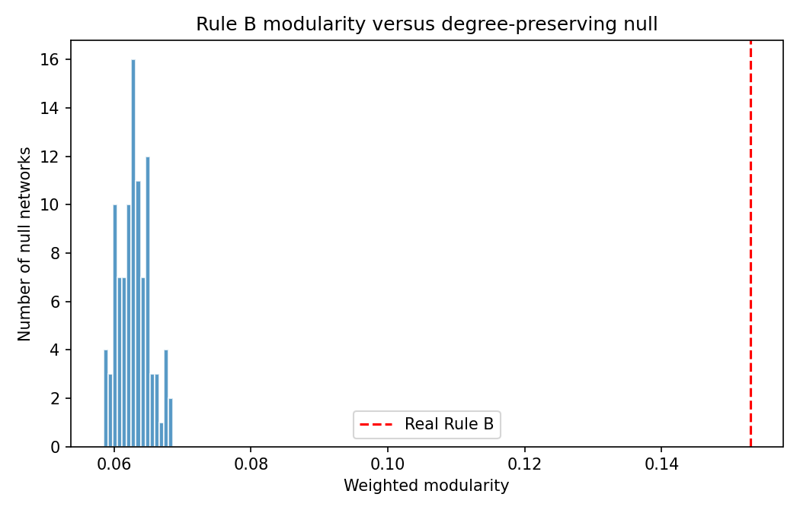

01 · Data coverage
192Total votes
168Usable votes
87.5%Coverage
The 24 unavailable vote records remain excluded and documented.
02 · Raw similarity versus null
Vote-level outcome distributions matter

03 · Network summary
Provisional Rule B network
- Politicians
- 150
- Edges
- 3,086
- Components
- 6
- Giant component
- 117
No final network visualization is presented here.
04 · Community structure
Stable across Louvain seeds
9 representative communities
Mean seed-to-seed NMI: 0.9623

05 · Compared to null
Modularity

Real Q = 0.153; null mean Q = 0.063; empirical p = 0.0099.
06 · Parties and communities
Partial alignment
Community/party NMI: 0.6449
Formal party membership and detected voting communities overlap substantially but do not encode exactly the same partition.
07 · Next
- Inspect community composition.
- Investigate cross-community structural positions.
- Later evaluate whether parliamentary language provides a second layer.